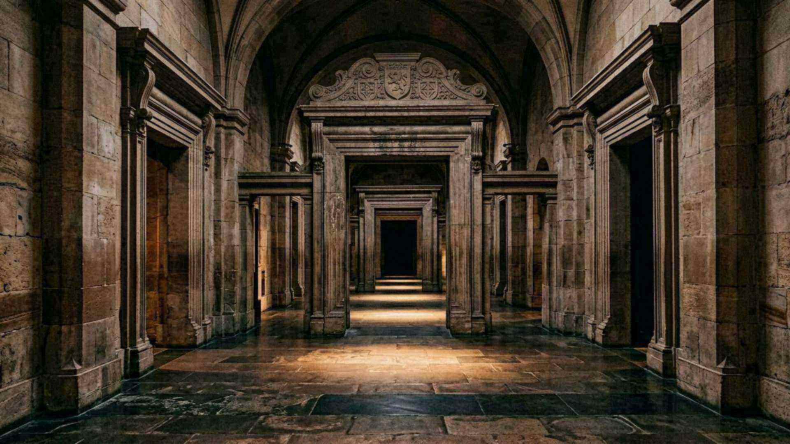
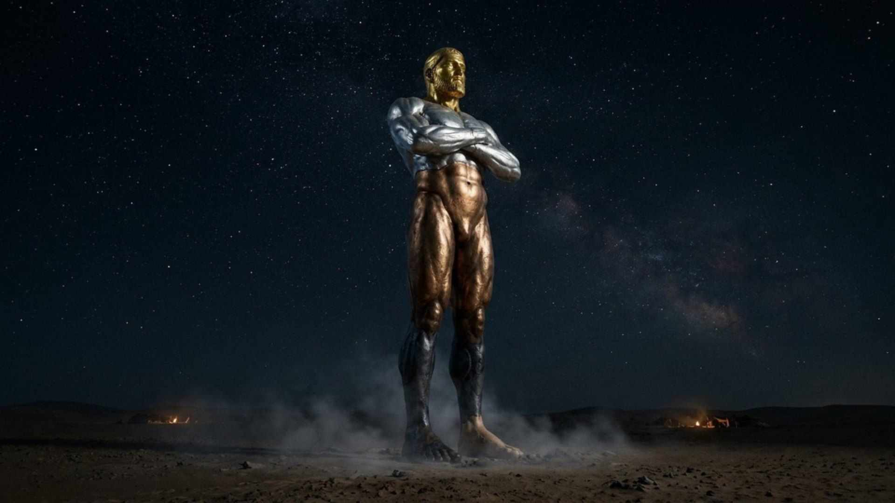

Index du musée
Les 31 salles
Six ailes, un seul fil : l’empreinte d’une intelligence à l’œuvre, du cosmos au cerveau, de Babylone à la prophétie.
« Grandes sont les œuvres de Jéhovah ; elles sont étudiées par tous ceux qui y prennent plaisir. »Psaume 111:2
Aile I
Le Cosmos
Le Législateur — 4 salles.

Au commencement
L’univers a une histoire : il a commencé.

Un univers réglé avec une précision vertigineuse
Quelques constantes décident de tout.

Un univers qui obéit à des lois
Le même code, partout, tout le temps.

Il appelle les étoiles par leur nom
Un ciel qui ne se compte plus.
Aile II
La Terre
Le Bâtisseur bienveillant — 4 salles.

Une adresse privilégiée dans l’univers
Ni trop près, ni trop loin, ni trop secoué.

Les boucliers invisibles
Trois enveloppes qui rendent la vie possible.

L’eau, l’exception qui rend la vie possible
Une molécule qui ne se comporte pas comme les autres.

Une planète qui se recycle
Rien ne se perd : tout recommence.
Aile III
Le Vivant
L’Ingénieur — 6 salles.

La cellule, une usine automatisée
Des moteurs rotatifs de dix nanomètres.
L’ADN, le langage du vivant
Trois milliards de lettres, deux mètres par cellule.
L’origine de la vie : ce que l’on sait, ce que l’on cherche
Une question honnêtement ouverte.
Le génie discret des plantes
Elles comptent, elles calculent, elles s’entraident.

Le hasard peut-il concevoir ? Le mur des brevets
Tout ce que les ingénieurs copient existait déjà.

Des sens extraordinaires
Voir par le son, sentir l’infrarouge, naviguer sans carte.
Aile IV
L’Homme
« Merveilleusement fait » — 3 salles.

Aile V
Les Prophéties
Le Musée de la prescience — 12 salles.

Babylone : le conquérant nommé deux siècles à l’avance
Un nom propre dans une prophétie, 200 ans avant la naissance.

Tyr : les pierres jetées à la mer
Une ville insulaire devenue presqu’île.

Ninive et les nations : la carte effacée
Une capitale si bien effacée qu’on ne savait plus son nom.

Jérusalem, l’exil et les soixante-dix ans
Un calendrier annoncé, un retour daté.

Daniel 2 : la marche des empires
Quatre métaux, quatre empires, une pierre.

Daniel 11 : l’histoire écrite à l’avance
Verset par verset, deux mille ans d’histoire.

Le Messie : plus de trente détails
Une convergence que personne n’aurait planifiée.
Les soixante-dix semaines : une date calculable
490 ans, un point de départ, une arrivée datée.

Jérusalem, an 70 : Jésus avait prévenu
Un signal pour fuir, trente-sept ans avant.

Une science en avance sur son temps
La Bible n’est pas un manuel : elle ne contient pas les erreurs de son époque.

Le signe composite depuis 1914
Guerres, pestes, séismes, morale, prédication : un faisceau.

Ce qui vient : la prochaine page
Une espérance, sans aucune date.

Écouter
Le parcours expliqué en 1 min 50
Six ailes, trois façons de circuler selon le temps disponible.